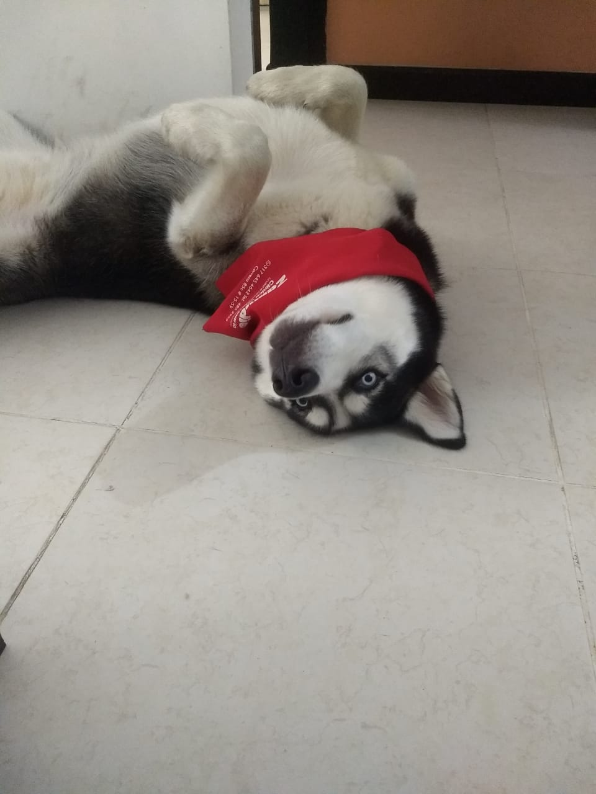

Mi nombre es Mayra Alejandra Ramos Narvaez, Nací y vivo en Santiago de Cali "La sucursal del cielo".
Soy profesional en Administración de Empresas y Tecnológa en Comercio Exterior. Actualmente estoy empleada en el Centro Internacional de Agricultura Tropical- CIAT.
Un Centro de investigación ubicado en Palmira (Municipio cercano a Cali).
Me gusta mucho pasear, me encanta la naturaleza, ir a cine, comer cosas diferentes, hacer postres, me gustan las plantas y me encataria tener una finca con frutas y animales y tener espacios de tranquilidad.
Tengo un perro que se llama Locky, un husky siberiano que es muy hermoso e inteligente.
